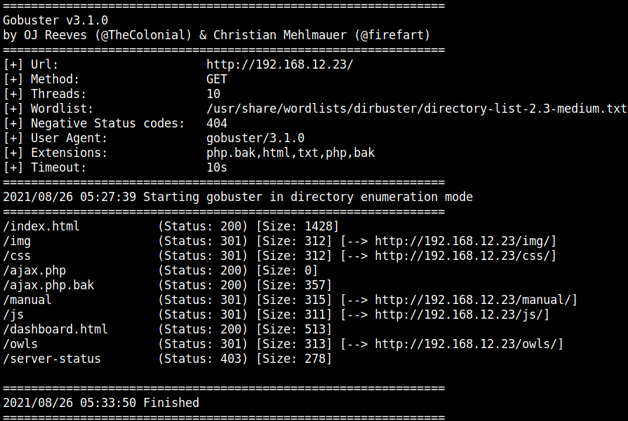
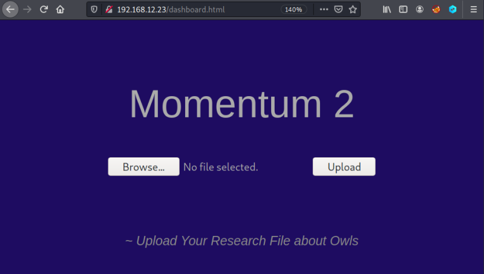
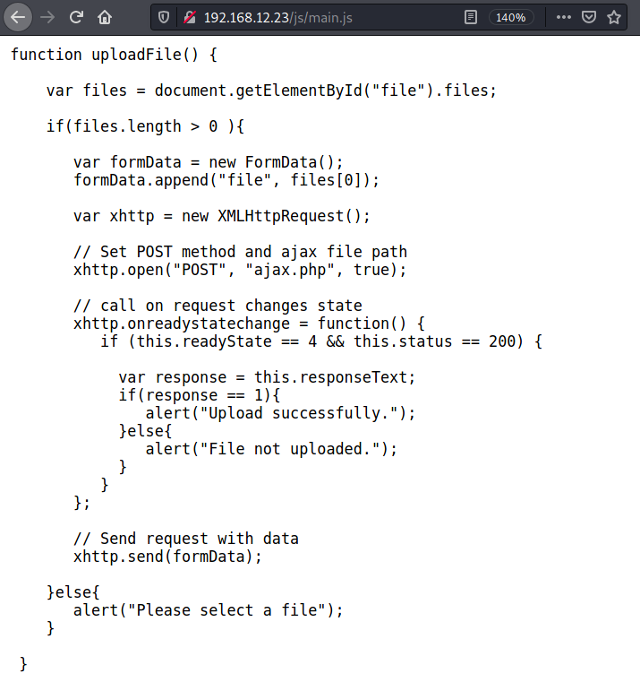

3.1 Files and directories
If you visit the 192.168.12.23 URL you got nothing interesting.
1. Enumerate information about the directories.
$gobuster dir -u http://192.168.12.23/ -x html,txt,php,bak,php.bak --wordlist /usr/share/wordlists/dirbuster/directory-list-2.3-medium.txt -o gobuster.log
Remember “php.bak” is also an extension.
Output:

We got some four intersting URIs were found from gobuster crawling result :
/ajax.php, /ajax.php.bak, /owls, /dashboard.html3. Open the
dashboard.html page.
There's a file called “main.js”.
4. In the
js directory there's a file called main.js. Open the file on your browser.
It appears that this javascript file has an ajax post request in it to upload a file to an endpoint on the server called
ajax.php and that when the file is successfully uploaded, we’ll get a 1 in response.5. Let's see what the
ajax.php.bak file has.Visit http://192.168.12.23/ajax.php.bak.
You can download the file and see its content.
//The boss told me to add one more Upper Case letter at the end of the cookie
if(isset($_COOKIE['admin']) && $_COOKIE['admin'] == '&G6u@B6uDXMq&Ms'){
//[+] Add if $_POST['secure'] == 'val1d'
$valid_ext = array("pdf","php","txt");
}
else{
$valid_ext = array("txt");
}
// Remember success upload returns 1
In order to bypass the file upload filter, you needed to do two things;
• You needed to add a cookie named
admin with the value of &G6u@B6uDXMq&Ms and some unknown character at the end of it• You needed to add a post section named
secure that had a value of val1d.Once you do these two things, then you can slip a php file onto the server.